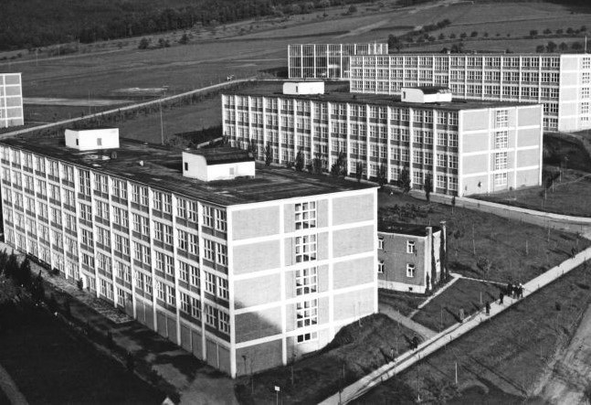

Tomáš Baťa – osobnost, která změnila myšlení národa
Tomáš Baťa nebyl jen podnikatelem, ale vizionářem s hlubokým smyslem pro odpovědnost vůči společnosti. Věřil, že úspěch firmy nemůže stát pouze na zisku, ale na poctivé práci, vzdělání, morálce a službě druhým. Jeho přístup k podnikání se zakládal na skromnosti, důslednosti a víře v potenciál každého člověka. Právě díky tomu dokázal vybudovat světovou obuvnickou velmoc, aniž by se vzdálil hodnotám, které považoval za základní.
Baťa byl přísný, ale spravedlivý. Od zaměstnanců vyžadoval hodně, ale sám šel příkladem. Neustále se vzdělával, zajímal se o nové technologie, sociální otázky i psychologii práce. Jeho pohled na výchovu a školství byl revoluční – školu vnímal jako nástroj pro formování silného charakteru. Mnoho lidí ho vnímalo jako průkopníka moderního řízení, ale především jako člověka, který spojil práci, hodnoty a službu do jednotného životního postoje.
Dílo, které přerostlo hranice Zlína
Dílo Tomáše Bati nebylo jen ekonomické – bylo společenské, výchovné a kulturní. Z malé rodinné firmy vybudoval celosvětovou obuvnickou značku, ale zároveň i model města a společnosti, kde každý článek měl své místo a odpovědnost. Město Zlín se díky jeho vizi proměnilo v ukázku moderního urbanismu a efektivního řízení – s nemocnicí, kinem, školami, bydlením i volnočasovými areály pro zaměstnance a jejich rodiny. Jeho továrny fungovaly jako samostatné buňky, řízené s důrazem na efektivitu, kvalitu a transparentnost.
Vychovávání dělníků
Zvláštní kapitolou v Baťově odkazu je Baťova škola práce, kterou založil v roce 1925. Nešlo o běžnou školu – byla to výchovná instituce, kde se mladí lidé učili nejen odborným dovednostem, ale především hodnotám, jako jsou morálka, pracovitost, skromnost a podnikavost. Škola kombinovala vzdělávání s praktickou prací ve firmě a kladla důraz na formování charakteru. Studenti bydleli v internátech, řídili se přesným denním režimem a byli vedeni k zodpovědnému životnímu postoji. Právě tímto přístupem Baťa inspiroval celé generace a jeho filozofie se stala vzorem pro moderní vzdělávací a manažerské systémy po celém světě.
